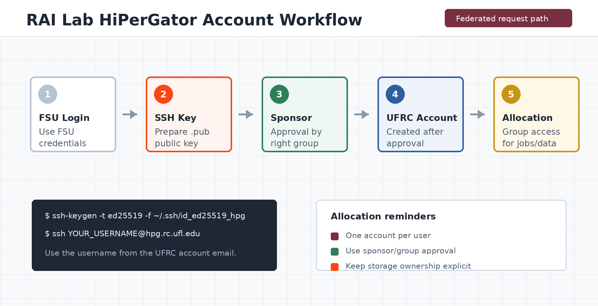

Confirm your sponsor
Ask your RAI Lab faculty lead or resource manager for the exact sponsor and group to use.
RAI Lab Resource Guide
Use this page when your work is supported by RAI Lab resources. Confirm the correct faculty sponsor and sponsored group before submitting the UF Research Computing request.
Reviewed September 8, 2026. UFRC documentation controls if procedures change.

Quick path
Ask your RAI Lab faculty lead or resource manager for the exact sponsor and group to use.
Generate an SSH key pair locally and keep the private key private.
Submit the federated request with your own institution's credentials, or follow the approved affiliate path if federation is unavailable.
Confirm your email, accept the terms, and upload only the public key.
Choose your identity path
Select Federated Account Request, choose Florida State University, and authenticate with your FSU credentials and FSU email.
If your home institution appears in the UFRC federated liaison list, choose it in the federated request and use that institution's credentials and email. Your RAI Lab faculty sponsor still approves resource access.
Ask your FSU faculty sponsor to confirm the official affiliate-account or UF GatorLink path before applying. Do not invent an FSU identity or use another person's credentials.
Before applying
If the sponsor or group is not clear, pause and ask the RAI Lab resource manager. A request submitted under the wrong sponsor or with the wrong institution can delay both account creation and group access.
SSH public key
ssh-keygen -t ed25519 -C "your_institutional_email" -f ~/.ssh/id_ed25519_hipergator
cat ~/.ssh/id_ed25519_hipergator.pubssh-keygen -t ed25519 -C "your_institutional_email" -f $env:USERPROFILE/.ssh/id_ed25519_hipergator
type $env:USERPROFILE/.ssh/id_ed25519_hipergator.pub
Upload the file ending in .pub. Never upload or send the private key. A public key may be required even when your first connection will use Open OnDemand or another browser-based interface.
Submit the request
I am a [FSU student/staff member OR student/researcher at HOME INSTITUTION] working with Professor [FULL NAME] in the RAI Lab. I am requesting HiPerGator access for [PROJECT OR PURPOSE] using the RAI Lab sponsored resources. My institutional email is [EMAIL]. Please associate my account with the appropriate sponsored group after sponsor approval.Replace every bracketed field before submitting. External students should keep their home institution and institutional email in the form; the faculty name in Comments should match the sponsor and project information you confirmed with the lab.
After approval
Complete any required onboarding or training, then test an interactive login and a small job.
ssh -i ~/.ssh/id_ed25519_hipergator YOUR_HIPERGATOR_USERNAME@hpg.rc.ufl.eduUse the HiPerGator username from your account email. It may differ from the local part of your institutional email address.
Follow the current UFRC network guidance. Federated SSH access may require eduVPN before connecting.
Confirm your default group, Slurm account, storage path, and the RAI Lab allocation you are expected to use.
Existing account
If you already have a HiPerGator account, ask the RAI Lab resource manager whether your existing username should be added to the relevant group or allocation. If a UFRC ticket is needed, include your HiPerGator username, institutional email, home institution if applicable, faculty sponsor, requested group, and a short project description.
FAQ
Do not select an unrelated sponsor. Confirm that the faculty sponsor has an active HiPerGator group and ask the RAI Lab resource manager or UFRC Support for the correct path.
Check spam or junk folders first. If it is still missing, contact UFRC Support with your name, institutional email, submission time, and sponsor.
Yes, when the additional group is approved. Keep the existing account and request the additional membership through the responsible manager or UFRC Support.
Yes, if an FSU faculty sponsor confirms the work and the student follows the identity path for their home institution. Use a federated home-institution account when available; otherwise follow the official affiliate-account instructions. Resource access is never automatic.
Official references